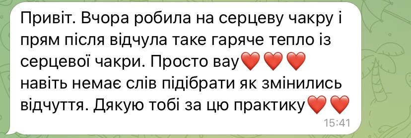
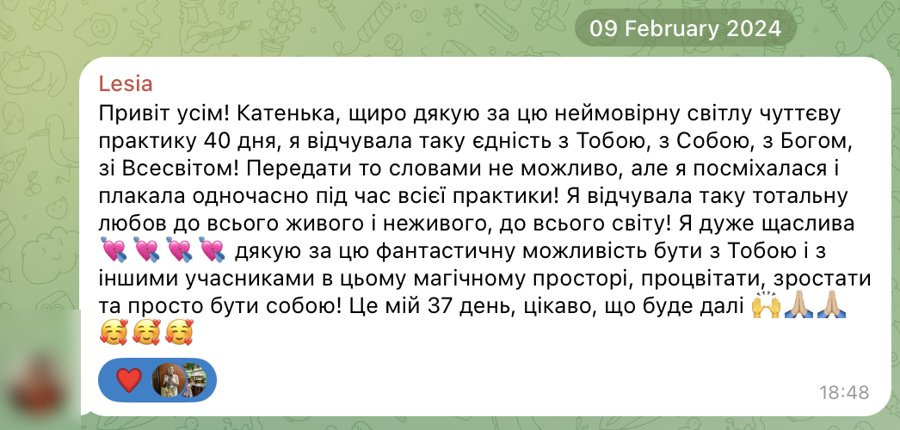
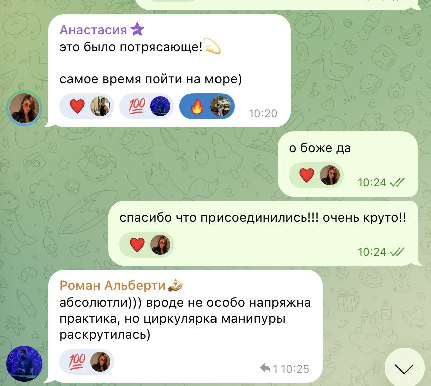

Ранок, після якого день іде інакше
Ранкова практика на відкритій веранді Китайського храму серед джунглів. Можна приходити без досвіду.
Ранкова практика на відкритій веранді Китайського храму серед джунглів. Можна приходити без досвіду.
Кундаліні-йога працює з усім тілом одразу: рух, дихання, медитація й звук. Люди приходять по різне, а йдуть зазвичай з одним відчуттям — зібраності й легкості.
Після ранкової практики голова ясна, а сил більше, ніж після кави.
Дихальні техніки й медитація знімають тривогу й напругу.
Крії зміцнюють прес, спину й внутрішній стрижень.
Особливо цінно, якщо ви нещодавно на острові й ще не знайшли своє місце.
Починаємо з мантри, щоб переключитися із суєти на практику.
М’яко розігріваємо хребет і тіло.
Основна частина: серія вправ із диханням на тему заняття.
Глибокий відпочинок лежачи, щоб тіло засвоїло практику.
Завершуємо медитацією й мантрою.
Медитації, щоб заспокоїтися й відновитися
Прощення, любов, відпустити минулі стосунки, зцілити розбите серце
Крії й медитації на процвітання та грошовий потік
Особиста сила, самооцінка й сила волі
А ще — практики для кожної з семи чакр:


Скриншоти справжніх повідомлень від учнів. Гортайте вбік.








Я Катерина (Shant Daspreet Kaur). Викладаю кундаліні-йогу з 2023 року, за цей час на мої заняття прийшли сотні учнів.
Я сертифікована викладачка KRI (Kundalini Research Institute) — це міжнародний стандарт навчання викладачів кундаліні-йоги. Пройшла програму Aquarian Teacher Level One (220 годин) в Україні у 2023–2024 роках.


Безкоштовні практики й медитації кундаліні-йоги на YouTube трьома мовами та в Telegram-каналі.
Так. Усі вправи можна робити у своєму темпі, а я підкажу легші варіанти.
Ні. У кундаліні-йозі головне — дихання й увага, а не гнучкість.
Під час вагітності, на жаль, ні: я не веду практики для вагітних. Після пологів можна приходити не раніше ніж через 6 місяців. Перед першим заняттям порадьтеся з лікарем і напишіть мені.
Напишіть мені до заняття: розкажете про себе, і я підкажу, чи підійде вам практика і як її адаптувати.
Англійською. Якщо щось незрозуміло — перекладу українською чи російською.
Для мене йога — це служіння, і я не хочу, щоб гроші заважали вашій практиці. Тому заняття проходять за донат: ви платите стільки, скільки вважаєте за потрібне, — за своїми можливостями й цінністю, яку отримали. Орієнтир — від 0 до 400 бат. Окремо оплачується вхід у храм — 100 бат.
Напишіть мені, і я підкажу, коли найближче заняття.